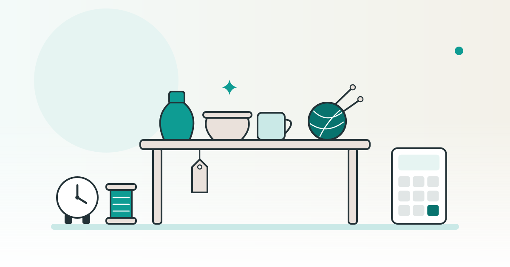

SHOPKIT コラム
ハンドメイド作品のネットショップを始めるには値付け・表示・作れる量

ハンドメイド作品のネットショップを開業するときは、作品の値段と、注文を受けられる量を一緒に考えましょう。材料をそろえて作るだけでなく、撮影や説明、梱包までを続けられる形にする準備です。作品ごとの記録をもとに、値付け・表示・受注の仕方をつなげて整理します。
この記事は、完成品のネットショップを販売している SHOPKIT が書いています。
ハンドメイド作品の値付けは、材料と実際の作業を書き出す所から
まず代表の作品を作り、使った材料と資材を記録します。まとめて購入した布や部品は、買った一袋の値段だけを見るのではなく、その作品にどれだけ使ったかも残しましょう。材料を切ったときの余りや、試作で使った分をどう考えるかも、自分の記録で分けておきます。
次に、作っている時間と、その前後の作業を区別して記録します。材料を手配する、準備をする、仕上げを確かめる、写真を撮る、説明を書く、梱包するといった作業です。作る手を動かしていた時間だけで、販売を続けるための手間を判断しないようにします。
| 整理する項目 | 記録する物 | 値付け前に考えること |
|---|---|---|
| 材料 | 購入額、作品に使った量、試作に使った分 | 同じ仕様を次に作る場合も材料を用意できるか |
| 制作と仕上げ | 工程と、実際に作業した時間 | 作り直しや仕上げの確認も含めて扱えるか |
| 販売の準備 | 写真、説明、包材の用意にかかった手間 | 注文を受けた後にも続けられる内容か |
| 届ける費用 | 梱包資材、送料、利用する決済等の条件 | 商品代金に含める物と別に案内する物は何か |
記録を並べたら、材料や配送などに払うお金と、自分の手間をどう価格へ反映するかを考えます。ほかの作品の値段を参考にする場合も、使っている材料、大きさ、仕上げ、販売する単位、送料の扱いをそろえて見ましょう。自分の作品に当てはめられる一律の倍率や金額は、ここでは示しません。
価格を表示するときは、国税庁のタックスアンサー「総額表示」の義務付けも確認します。同ページは、事業者が消費者へあらかじめ値段を示す場合に、消費税を含めた金額で表示する説明をしています。自分の取引の扱いは、公式資料と税務の相談窓口で確かめてください。
関連：ネットショップの価格の決め方｜原価・送料・手数料と税込の表示
完成している物と、注文後に作る物を分けて受け付ける
値段と並行して、何をどの状態で販売するかを決めます。完成品を用意して売る形と、注文を受けてから作る形では、材料や制作の予定を確かめる場面が違います。完成品の数と、これから作れると見込んでいる数を、同じ在庫の記録に混ぜないようにしましょう。
作れる量を考えるときは、使える日や作業場所、手元の材料、進行中の注文を照らします。手を動かしている工程だけでなく、乾燥などの待ち時間や、撮影・梱包に使う時間も分けて見ます。試作で早くできた結果を、そのまま受けられる注文量に置き換えないようにします。
色や長さなどの変更を受けるなら、選べる範囲と、追加で確かめる工程を決めておきましょう。材料が変わる場合は、同じ値段や同じ発送予定で引き受けられるかを先に見直します。条件が決まらない注文を、いつもの作品と同じ扱いで受けないための準備です。
- 受付前に、手元の材料と仕掛かりの作品を照らす。
- 受け付ける仕様と、変更を受ける範囲を決める。
- 制作・仕上げ・梱包を経て、発送の予定を案内できるか確認する。
- 進行中の分を見直してから、次の注文を受ける量を決める。
商品ページにも、完成品を届けるのか、注文後に制作するのかを明記する案を考えます。材料の調達や作り直しが必要になったときも含め、自分で確かめた条件をもとに予定を伝えましょう。
素材と取り扱いは、作った品物に合う表示を確認する
使った材料の名前や、仕入れ先から受け取った情報を、作品ごとに残します。布や金属の見た目だけで素材を決めず、確認できた内容と分からない内容を分けましょう。水洗いできるか、使う際に気を付ける所は何かも、根拠を持って説明できる範囲を確かめます。
消費者庁の「製品別品質表示の手引き」は、繊維製品、合成樹脂加工品、電気機械器具、雑貨工業品の品目ごとに案内を分けています。ハンドメイドという呼び方だけで表示の扱いを決めず、自分が作る品物の分類と必要な表示を確認してください。
一覧に似た名前があっても、自分の作品へそのまま当てはめられるかは別に確かめます。素材、用途、形状の分かる資料をそろえ、消費者庁などの担当窓口へ相談しましょう。商品ページの素材説明と、品物へ付ける表示も混同しないようにします。
他人の作品やキャラクターを使う前に、利用できる範囲を確かめる
作りたい物を考える際は、他人の作品、キャラクターの絵柄、型紙、写真などを、そのまま販売用に使ってよいとは決めないようにします。材料や作り方を購入した場合も、作った物の販売や写真の利用にどんな条件があるかを確認し、読んだ説明や回答を残しましょう。
文化庁の「他人の著作物を利用したい場合など」は、著作物に当たるか、保護される対象か、保護期間や許諾なしで使える規定に該当するかを確認する流れを示しています。そのうえで、これらに当てはまらない場合は、原則として権利者の許諾が必要だと説明しています。
少し形や色を変えたという理由だけで、販売してよいかを自分で結論づけないようにします。著作権以外の権利や利用条件も含め、文化庁の案内や関係する窓口で確認してください。この記事では、特定の作品が権利を侵害するかどうかは判定しません。
作品の名前やお店の名前を考える際の商標の確認は、関連の記事で別に整理しています。
関連：ネットショップの商標登録は必要？区分の考え方・調べ方・出願の流れ
写真は見本か現物かを示し、個体差を具体的に伝える
商品写真を用意するときは、撮ったその作品を販売するのか、注文後に同じ仕様で作るための見本なのかを説明します。柄の出る位置や編み目、仕上がりの形が変わるなら、どの部分が変わり得るかを具体的に伝える案を考えましょう。
個体差を説明するときも、「手作りなので違います」だけで終えないようにします。作品の全体、厚みや留め具などの細部、大きさを確かめるための寸法を組にして見せます。販売する単位と、写真に写る付属品もそろえておきましょう。
見せるための写真と、自分が仕上げを確かめる記録を照らし、写真で伝えた仕様と注文で受ける仕様が一致するかを読み直します。傷や作りの不具合を個体差の説明だけで済ませず、販売前に自分の仕上げの基準と比べて扱いを決めます。
関連：ネットショップの商品写真の撮り方｜一覧でそろって見える条件と使えない画像
仕入れた商品を売る形と、自分で作る工程の違いを比べる
仕入れた商品を売る場合は、供給元や届く品物の仕様を確かめます。自分で作る場合は、それに加えて、材料を作品へ仕上げる工程と、作れる量を自分で管理する準備が中心になります。商品ページを用意する手間だけで始め方を比べず、注文を受けた後の制作も含めて考えましょう。
ハンドメイド作品のネットショップの始め方を決める前に、試作した作品の材料・工程・写真・説明をひとまとめにしてみます。材料が変わったときに値段や案内をどこで見直すか、作れない時期に受付をどうするかも、検討する項目になります。
どちらの形でも、売る品物と販売条件を自分で理解し、読み手が選ぶための情報を伝える準備が要ります。自分が担当できる工程と、確認先が必要な事項を並べ、続けられる受け付け方を決めていきましょう。
よくある質問
ハンドメイド作品の値段は、材料費だけで決めてよいですか？
材料に加え、制作や仕上げ、撮影・説明・梱包などを記録し、費用と自分の手間を価格へどう反映するかを考えます。一律の倍率や金額は示していません。
ハンドメイド作品の注文を受ける量は、何をもとに決めればよいですか？
材料、使える日や作業場所、進行中の注文を照らします。制作だけでなく、待ち時間や発送前の準備までを確認して、受け付ける量を考えましょう。
注文後に作る作品の商品写真は、見本を撮った物でもよいですか？
見本を撮った場合は、注文後に同じ仕様で作るための写真だと説明します。柄の位置などが変わるなら、その部分を具体的に案内する準備を考えます。
※ 公的資料は2026年10月28日に確認しました。素材の表示や権利、税務の個別の扱いは、各資料の担当窓口でご確認ください。